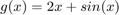
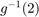
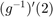
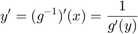
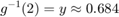
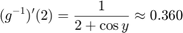

Om , visa att har invers, och hitta  och .
Det går att lösa med kod
f = @(x) 2*x + sin(x); % Vi vet att $g(y(x)) = 2$ så vi sätter $y = 2$ och löser för $x$ y0 = 2; x0 = 0; yerror = f(x0) - y0; yerror_previous = yerror; dx = 0.1; % Loopar tills skillnaden är mindre än 1E-5, Newton-Raphsons metod while abs(yerror)>1E-5 if yerror*yerror_previous < 0 dx = dx * 0.1; end yerror_previous = yerror; x0 = x0 - sign(yerror) * dx; yerror = f(x0) - y0; end fprintf(' finverse(2) = %f \n', x0);
finverse(2) = 0.684040
Men vi dubbelkollar med fzero()
x_fzero = fzero(@(x) f(x) - 2, 0);
fprintf(' finverse(2) = %f \n', x_fzero);
finverse(2) = 0.684037
Nu hittar vi , men vi vet redan att

g_inv_prime = 1 ./ (2 + cos(x_fzero));
fprintf(' ginverseprime(2) = %f \n', g_inv_prime);
ginverseprime(2) = 0.360357
Alltså har vi slutligen

